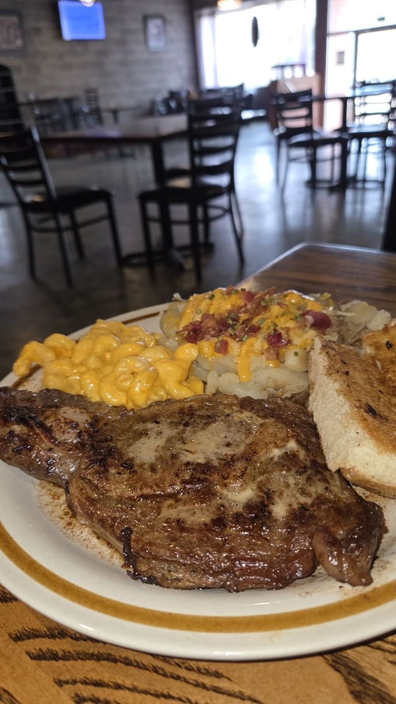

4.5★ reviews
“Delicious food, great service, love the dining room. We had the lobster mac and cheese, fried chicken, potato salad, cabbage, and hamburger steak all absolutely delicious!”
“Excellent food and friendly service in downtown Columbia. We are so happy we found this place and would definitely come back again. Wonderful down home food!”
“Uptown has the BEST food! Potato salad, perfect. Country fried steak, AMAZING! When in Columbia, Mississippi this is a definite stop for delicious soul food. Workers are so kind too.”
“My Husband and I stopped here for lunch and it did not disappoint! Katie was very helpful and gave us her opinions on some items to try and had great customer service! Every bit of what we had was scrumptious! We're…”
“Excellent soul food!! Generous portions and full of flavor. Highly recommend especially the fried green tomatoes!!”
“I loved this place. I didn't know it existed until yesterday. Very relaxing seating and awesome customer service. The food was great, and pricing was very reasonable. Our portions of food were a very nice size, I'll be…”
“Wings were addicting! I got the 51/50 with a side of buffalo sauce and an order of the loaded fries. They were good to just not big on shrimp with my fries but overall it was great and I'll for sure be back. The cashier…”